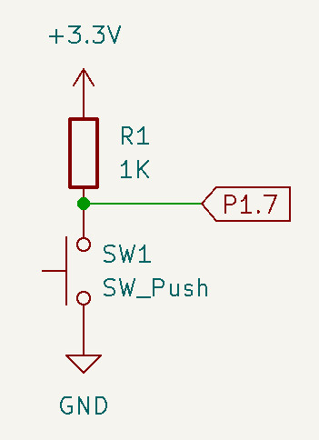
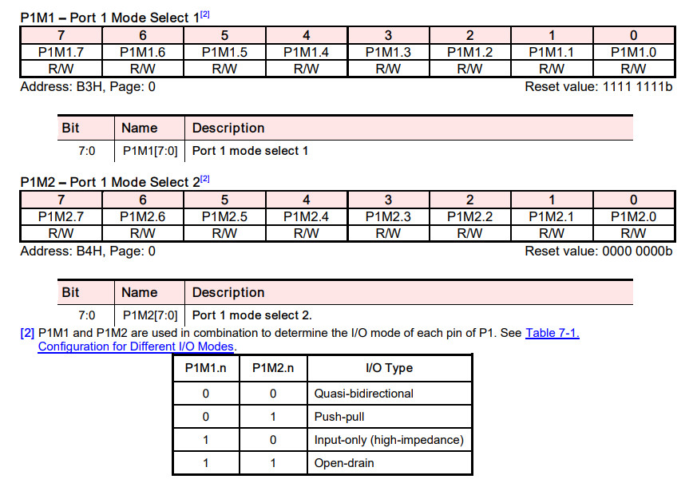
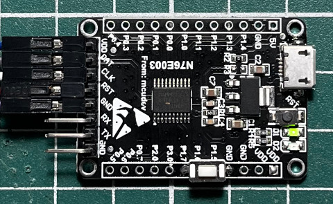
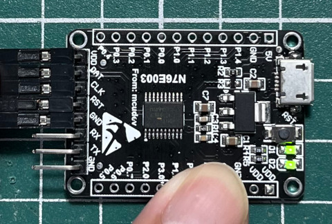

參考資訊：
https://github.com/jdelphi/nuvoprog2
https://github.com/erincandescent/libn76
https://github.com/erincandescent/nuvoprog
https://cmheong.blogspot.com/2020/07/flashed-before-my-eyes-nuvoton-76n003.html
按鍵是連接到P1.7


#include <stdint.h>
#include <n76e003.h>
static void delay(uint32_t cnt)
{
while (cnt--) {
}
}
void main(void)
{
P1M1 = 0x80;
while (1) {
P12 = P17;
}
}
完成

